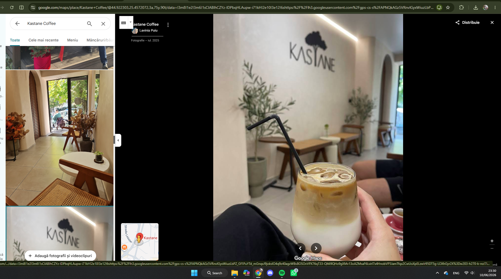
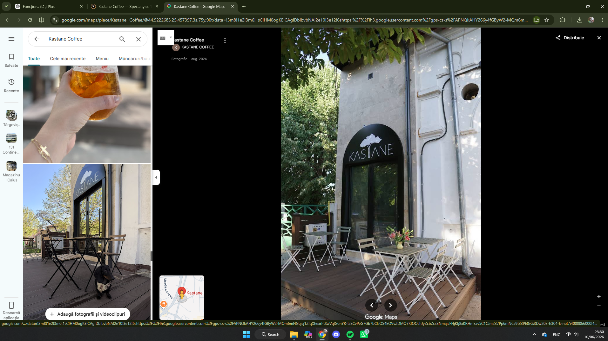
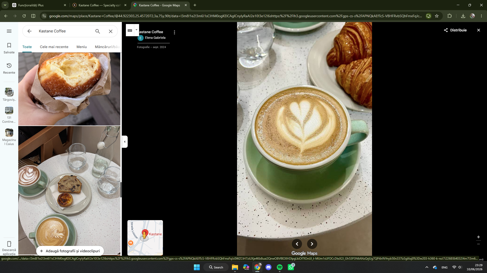
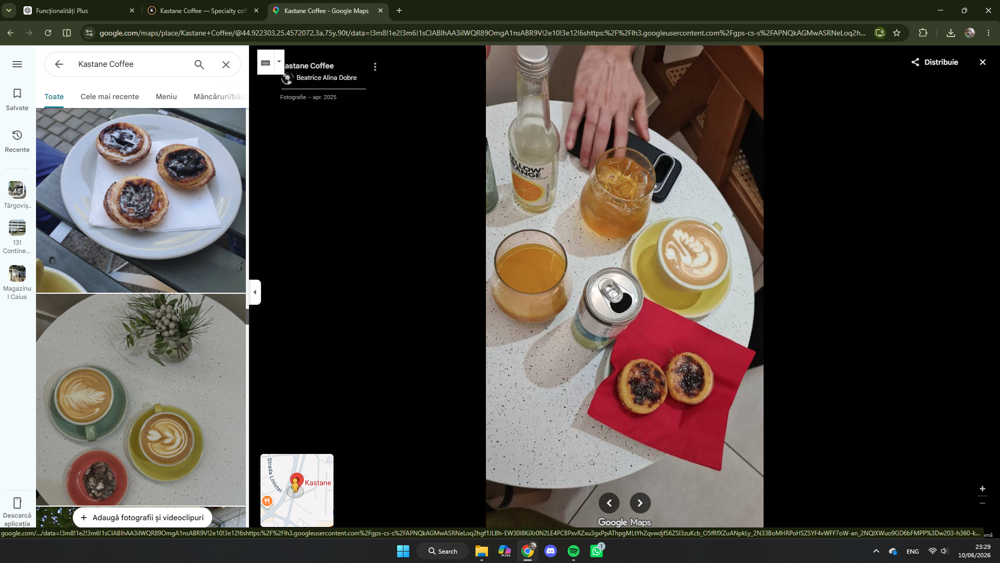
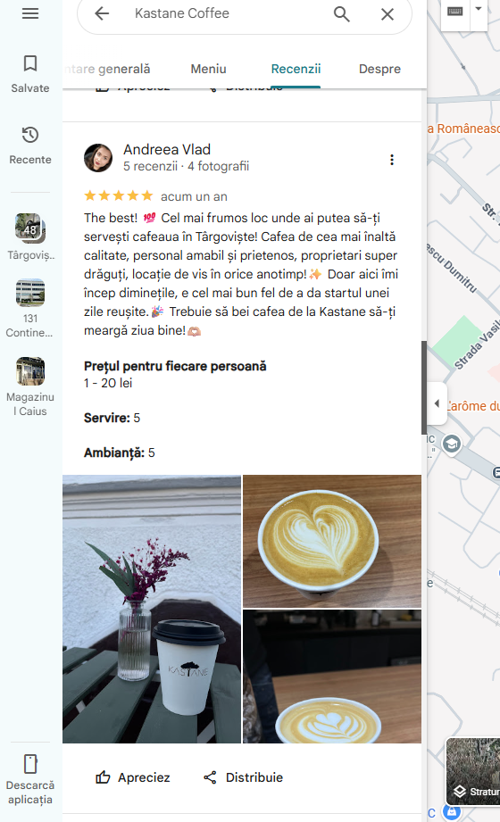
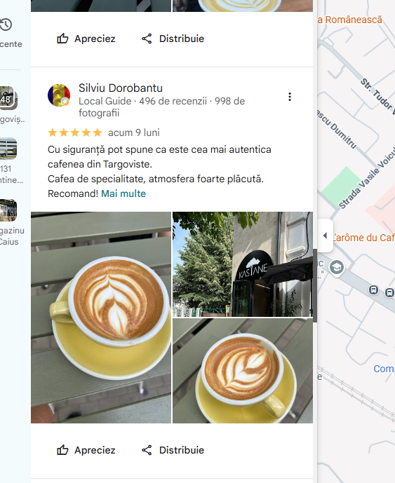
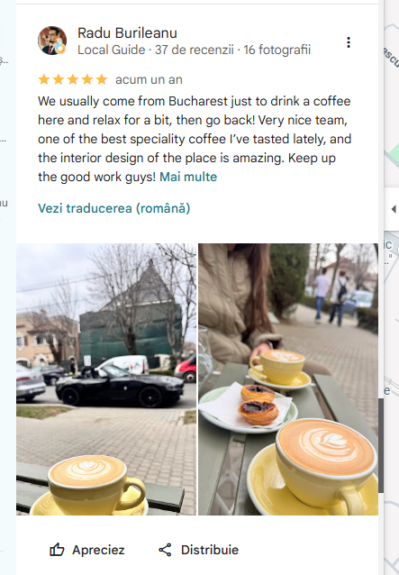
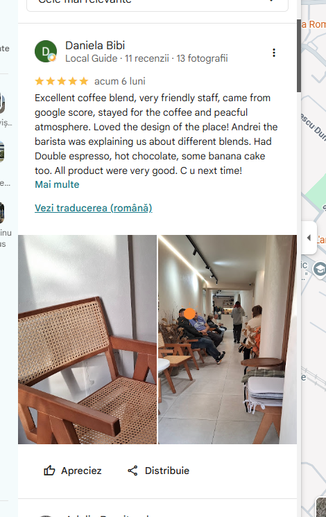

Iced coffee
interior cald, logo recognoscibil
specialty coffee · târgoviște
Cafea de specialitate, atmosferă liniștită și un spațiu creat pentru momente care merită savurate.


atmosfera kastane
Kastane nu arată ca o cafenea generică. Terasa intimă, interiorul minimalist și detaliile calde creează senzația unui loc descoperit, nu doar vizitat.
galerie
interior cald, logo recognoscibil

ritual de dimineață

cafea, conversații, pauză
liniște, verdeață și lumină naturală
cafea
Site-ul poate prezenta meniul complet când este confirmat de local. Pentru vizitator, cele mai importante repere sunt simple: espresso, cappuccino, flat white, filter coffee, cold brew și opțiuni decaf.
recenzii reale
„Cel mai frumos loc unde ai putea să-ți servești cafeaua în Târgoviște.”
„Cea mai autentică cafenea din Târgoviște. Cafea de specialitate, atmosferă foarte plăcută.”
„One of the best specialty coffee I’ve tasted lately.”
„Excellent coffee blend, very friendly staff and peaceful atmosphere.”




contact
Pentru program actualizat, noutăți și selecții de cafea, cel mai simplu este ca vizitatorul să verifice Instagramul sau să sune direct.